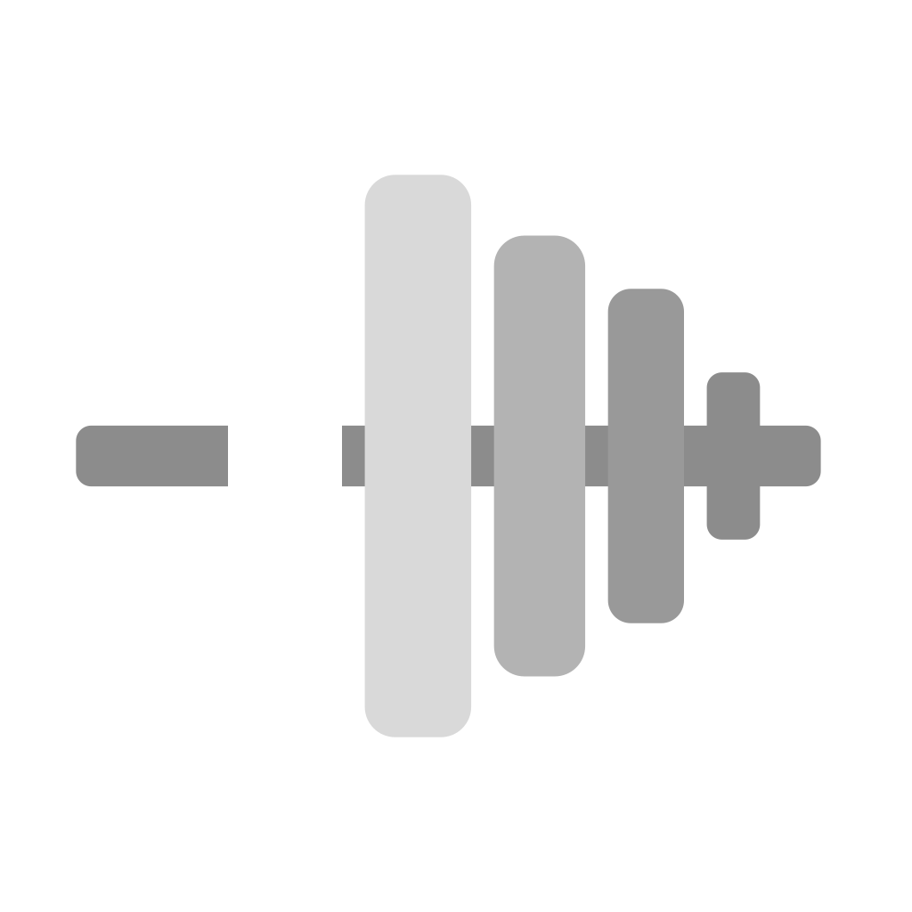
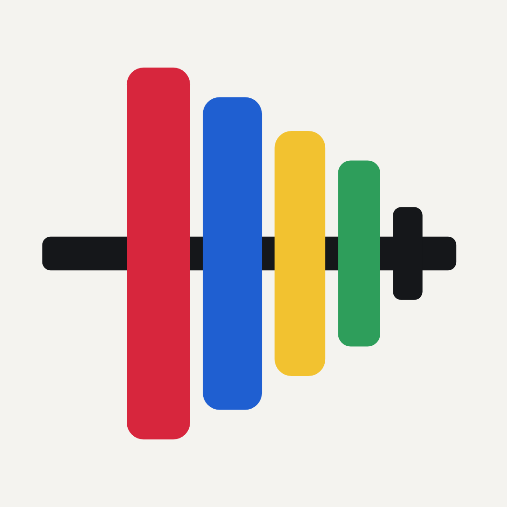

Ikona: obecny rysunek, pliki docelowe (zatwierdzone STOP E3, 21.10.2026)
Rysunek bez zmian (decyzja STOP E2, 21.10.2026). Nowy plik: zegarek 1088×1088 (HIG App icons, tabela specyfikacji: watchOS „1088x1088 px”, kształt okrągły; odczyt 21.10.2026). iOS: assets/icon.png 1024 RGB bez przezroczystości (ikona.mjs kod 0), ciemny i barwiony — obecne pliki. Android: nie wydawany (DEC-26) — otwarte. Wpięcie zegarka 1088 i tła startu: ikona/konfiguracja.md (rola 08).
iPhone — jasna tapeta (180, 60, 40 i 29 pt)
iPhone — wygląd ciemny i barwiony (tło ikony daje system)

Zegarek — maska okrągła (zegarek-1088.png; 196, 100 i 44 px)

Talerze mieszczą się w kole: najdalszy narożnik (talerz 25 kg, 30/16 w siatce 120) leży 53 jednostki od środka przy promieniu 60. Tło papieru, nie czarne (HIG watchOS: „Avoid using black for your icon’s background.”).